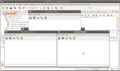
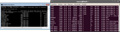
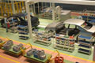
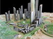

| Recurso (1) | Datos del recurso (1) | Recurso (2) | Datos del recurso (2) |
|---|---|---|---|
|
Autoría: Margarita I. Nieto Castillejo. Licencia: Copyright(cita). Procedencia: Montaje a partir de capturas de pantalla de las aplicaciones OpenOffice y NetBeans, propiedad de Oracle, así como de Windows 7 e Internet Explorer, propiedad de Microsoft. |
Autoría: Margarita I. Nieto Castillejo. Licencia: Copyright(cita). Procedencia: Montaje a partir de capturas de pantalla de las aplicaciones OpenOffice y NetBeans, propiedad de Oracle, ejecuntándose en el sistema operativo Linux Ubuntu. |
||
|
Autoría: Fantasy Art. Licencia: CC BY-NC-SA. Procedencia: http://www.flickr.com/photos/fantasy-art-and-portraits/2871173915/ |
 |
Autoría: Margarita I. Nieto Castillejo. Licencia: GNU GPL. Procedencia: Captura de pantalla de la aplicación NetBeans, propiedad Sun Microsystems, bajo licencia GNU GPL v2. |
|
|  |
Autoría: Margarita I. Nieto Castillejo. Licencia: GNU GPL. Procedencia: Montaje a partir de captura de pantalla de Ubuntu, bajo licencia GNU GPL y captura de pantalla de Windows 7 propiedad de Microsoft. |
Autoría: Margarita I. Nieto Castillejo. Licencia: Copyright (cita). Procedencia: Montaje a partir de captura de pantalla de Windows 7 propiedad de Microsoft. |
|
|
Autoría: Margarita I. Nieto Castillejo. Licencia: Copyright (cita). Procedencia: Montaje a partir de captura de pantalla de Ubuntu, bajo licencia GNU GPL y captura de pantalla de Windows 7 propiedad de Microsoft. |
Autoría: Bludgeoner86. Licencia: CC BY. Procedencia: http://www.flickr.com/photos/bludgeoner86/2298512615/sizes/s/in/photostream/ |
||
|
Autoría: Uh Ah, ¡Chavez no se va!. Licencia: CC BY-NC-SA. Procedencia: http://www.flickr.com/photos/uhah-chavez/3112764608 |
Autoría: Gilles Radenne. Licencia: CC BY-NC-SA. Procedencia: http://www.flickr.com/photos/40856616@N02/4569009897 |
||
|
Autoría: Sebastián Villanueva. Licencia: CC BY-NC-SA 2.0. Procedencia: http://www.flickr.com/photos/sopapos/2333019881 |
Autoría: David Buedo. Licencia: CC-by-nc-sa. Procedencia: http://www.flickr.com/photos/dbuedo/2425690907/in/photostream |
||
|
Autoría: Lilia's photos. Licencia: CC BY-NC 2.0. Procedencia: http://www.flickr.com/photos/lilia_ann/2952271641/ |
Autoría: Leonard John Matthews. Licencia: CC by-nc-sa. Procedencia: http://www.flickr.com/photos/mythoto/4856682456/sizes/l/in/photostream/ |
||
|  |
Autoría: urbangarden. Licencia: CC BY-NC-SA 2.0. Procedencia: http://www.flickr.com/photos/urbangarden/336062325/ |
Autoría: ryancr. Licencia: CC BY_NC 2.0. Procedencia: http://www.flickr.com/photos/ryanr/142455033/ |
|
|
Autoría: Catwomancristi Cristina Mª Granados Roas. Licencia: CC BY-NC-SA 2.0. Procedencia: http://www.flickr.com/photos/catcrispi/4365291393 |
Autoría: Mark Sardella. Licencia: CC BY-NC-SA 2.0. Procedencia: http://www.flickr.com/photos/dr_television/2257036216/ |
||
|
Autoría: Paul-W. Licencia: CC BY-NC-SA 2.0. Procedencia: http://www.flickr.com/photos/paul-w-locke/3529691660/ |
Autoría: Greg Boege. Licencia: CC BY-NC-SA. Procedencia: http://www.flickr.com/photos/sombraala/2805351599/ |
||
|  |
Autoría: Associated Fabrication Associated Fabrication. Licencia: CC BY. Procedencia: http://www.flickr.com/photos/associatedfabrication/3554696352/in/photostream/ |
Autoría: Alessandro Pinna. Licencia: CC BY-NC-SA. Procedencia: http://www.flickr.com/photos/alessandropinna/1423128740/ |
|
|
Autoría: speric. Licencia: CC BY-NC 2.0. Procedencia: http://www.flickr.com/photos/ericfarkas/248712799/ |
Autoría: goingslo (Linda Tanner). Licencia: CC BY. Procedencia: http://www.flickr.com/photos/goingslo/4523034319/ |
||
|
Autoría: Jon Fravel. Licencia: CC BY-NC-SA 2.0. Procedencia: http://www.flickr.com/photos/jfravel/2176411801/ |
Autoría: NASA Goddard Space Flight Center. Licencia: CC BY 2.0. Procedencia: http://www.flickr.com/photos/nasa_goddard/6559334541/ |
||
|
Autoría: Travelin' Librarian Michael Sauers. Licencia: CC BY-NC. Procedencia: http://www.flickr.com/photos/travelinlibrarian/2439527693/ |
Autoría: Todd F. Licencia: CC BY-NC-SA. Procedencia: http://www.flickr.com/photos/ameotoko/4369947174/ |
||
|
Autoría: Chiot's Run. Licencia: CC BY-NC. Procedencia: http://www.flickr.com/photos/chiotsrun/6575903031/ |
Autoría: Emilian Robert Vicol. Licencia: CC BY. Procedencia: http://www.flickr.com/photos/free-stock/4817557234/ |
||
|
Autoría: rkramer62 Rachel Kramer. Licencia: CC BY. Procedencia: http://www.flickr.com/photos/rkramer62/6233679473/ |
Autoría: trustipics. Licencia: CC BY-NC-SA. Procedencia: http://www.flickr.com/photos/trustypics/3412371985/sizes/s/in/photostream/ |
Unidad de trabajo 1